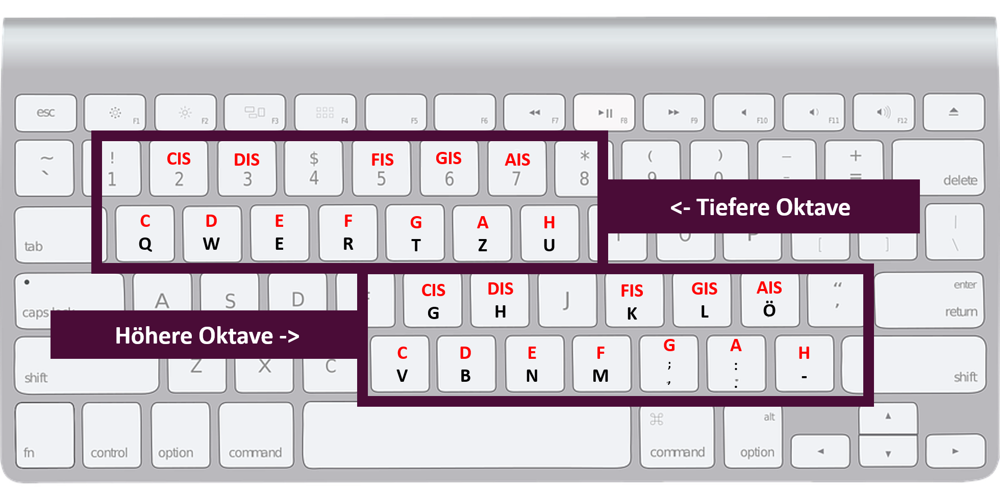
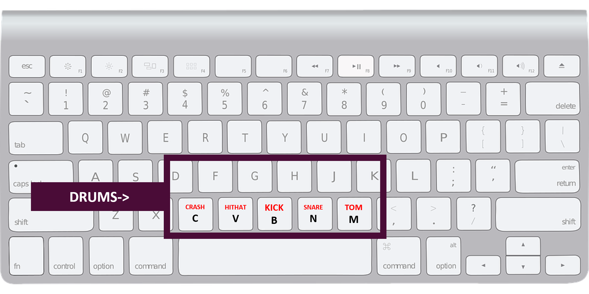

<mat-card class="sessionCardHeader" *ngIf="client == null">
    <mat-label class="sessionCardLabel">Aktuelle Sessions</mat-label>
    <button class="refreshButton" mat-raised-button (click)="requestAllSessions()"><mat-icon>refresh</mat-icon>refresh</button>
    <button class="newButton" mat-raised-button (click)="openCreateDialog()"><mat-icon>add_box</mat-icon>new JamSession</button>
</mat-card>
<mat-card class="sessionCardContent" *ngIf="client == null">
    <mat-spinner *ngIf="spinningBool" class="spinning"></mat-spinner>
    <p></p>
    <mat-error *ngIf="noSessions">Hoppla, keine Sessions vorhanden</mat-error>
    {{client == null}}
    <div *ngFor="let session of sessions">
      <mat-card class="sessionListCard">
        <div><strong>Session Name: </strong> {{session}}</div>
        <button class="joinButton" mat-raised-button (click)="openJoinDialog(session)">Beitreten</button>
      </mat-card>
      <div class="sessionListDivider"></div>
    </div>
</mat-card>
<mat-sidenav-container *ngIf="client != null">
  <mat-sidenav mode="side" opened position="end">
    <button mat-raised-button (click)="downloadAllSounds()">download</button>
    <mat-error *ngIf="newplayer">Bitte Sounds herunterladen! Ein neuer Spieler ist der Session beigetreten.</mat-error>
    <div>
      <div *ngFor="let message of chatMessages">
        <mat-card class="messageCard">
          <mat-card-header>
            <strong>{{message.sender}}</strong>
          </mat-card-header>
          <mat-card-content>
            {{message.message}}
          </mat-card-content>
        </mat-card>
        <div class="messageListDivider"></div>
      </div>
    </div>
  </mat-sidenav>
  <mat-sidenav-content>
    
    
  </mat-sidenav-content>
</mat-sidenav-container>
